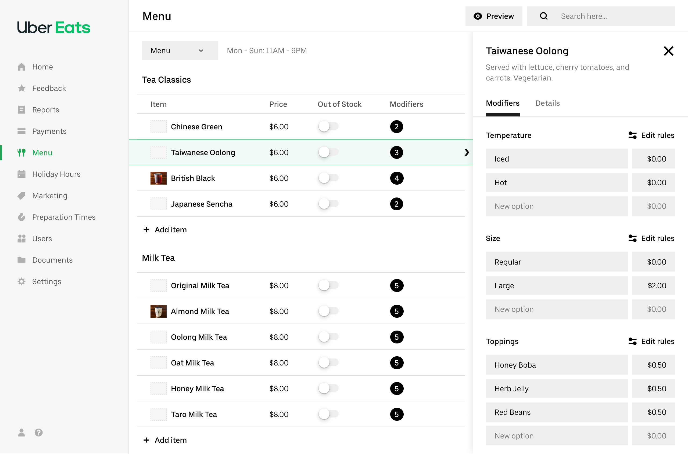
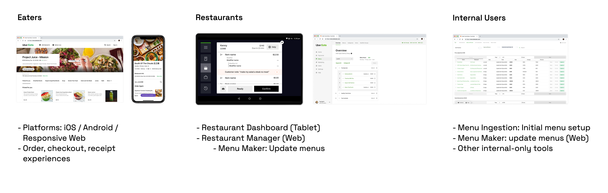
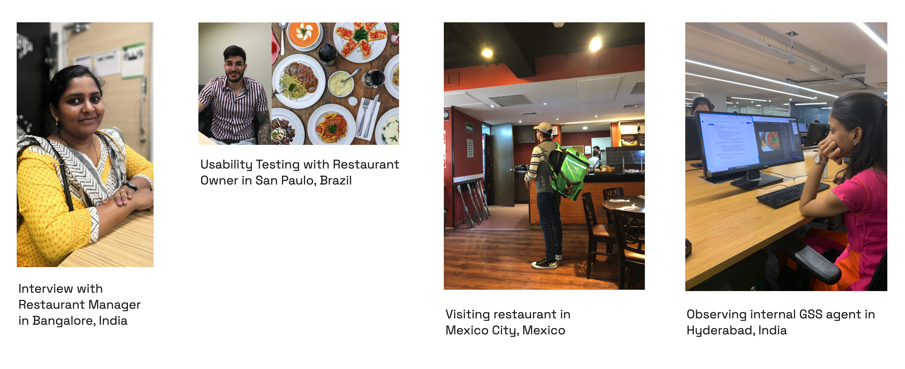
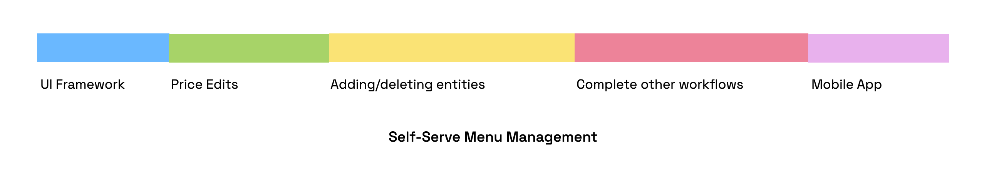
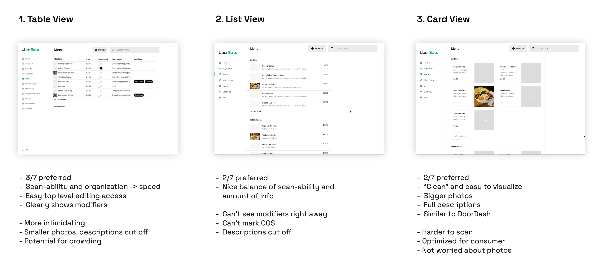
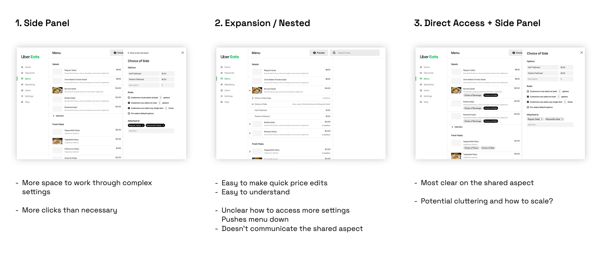
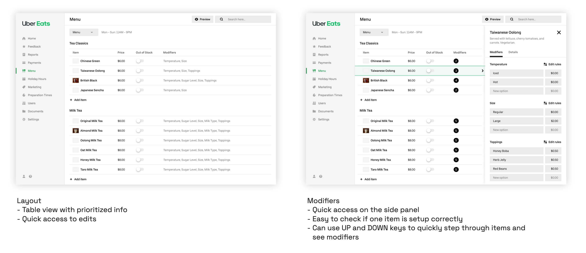
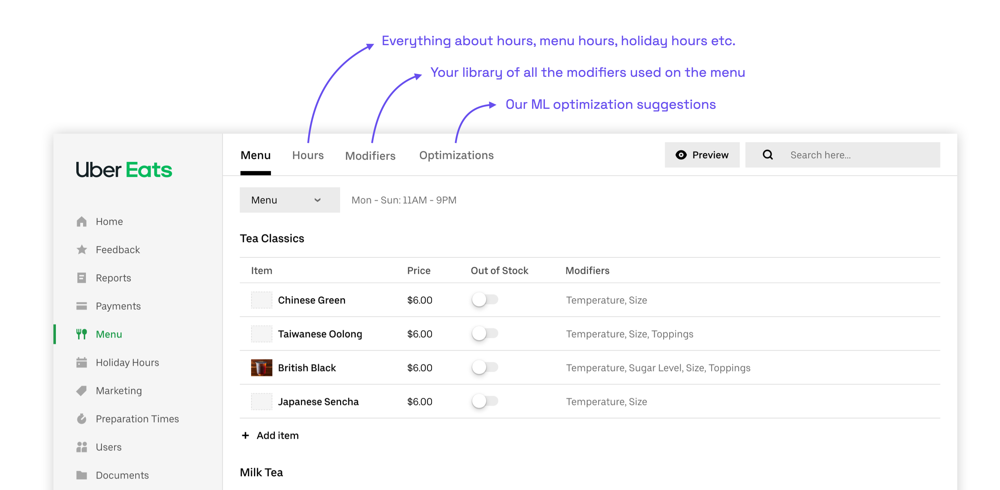
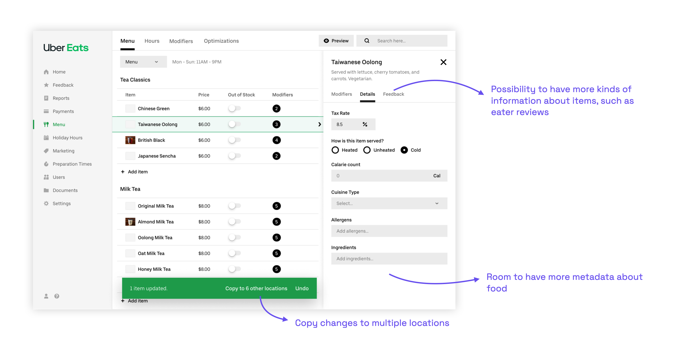

Restaurant Menus
Product Design · Uber Eats · 2019
Product Design · Uber Eats · 2019

I joined Uber Eats as the designer leading the Menus team within the Restaurant organization in New York in March 2019. The team was responsible for the full menu ecosystem: the ordering experience for eaters on iOS, Android, and web; the tools restaurants use to manage their menus; and the internal tools used by Uber's support and operations teams.
Menus have a deeply nested structure — a restaurant can have multiple locations, each with multiple menus, categories, items, modifier groups, and modifier options. Managing this complexity accurately is critical: an incorrect price or a missing item directly impacts both restaurant revenue and the eater experience.

The menu ecosystem spans eaters (ordering), restaurants (management), and internal Uber teams.The flagship tool for restaurant menu management was Menu Maker — a web product two years in the making when I joined, just beginning its rollout. Restaurants used it to update prices, add or remove items, and manage modifier groups. Uber's support agents used it too, making edits on behalf of restaurants that couldn't or wouldn't self-serve.
Early in 2019, I traveled to Bangalore, São Paulo, Mexico City, and Hyderabad to conduct interviews, usability testing, and in-person observations with restaurant owners, managers, and internal support agents. These trips were formative — they surfaced not just usability gaps but a fundamental breakdown in restaurant confidence and trust in the tool.

Field research across four cities in early and mid 2019.The qualitative findings were consistent across markets:
The data told the same story. 53% of users were overall dissatisfied with Menu Maker, and 50% reported it was somewhat or very difficult to use. Perhaps most revealing: of all restaurants who contacted Uber support to make menu changes, almost 80% had tried Menu Maker first. This wasn't an access problem — it was a usability problem.
Looking at the support ticket breakdown, price changes (27%) and item additions/deletions (23%) were the most common requests. These were the jobs restaurants needed to do most, and the current tool was failing them at exactly those tasks.
During 2020 planning, I worked with my PM to make the case for a major investment in self-serve menu management. The project aligned directly with two Uber Eats company objectives: reducing support costs (every ticket avoided was operational savings) and improving menu accuracy (incomplete or incorrect menus hurt eater experience and restaurant performance alike). It was prioritized as one of the most important efforts for the year.
A key strategic decision was how to approach the scope. The team had just spent two years building Menu Maker — a monolithic redesign would be a hard sell, both politically and practically. Instead, we planned a continuous improvement roadmap built around a new UI framework that each subsequent project could build on:

A phased roadmap: ship the framework first, then layer in the highest-priority workflows one at a time.Before any specific workflows could be redesigned, I needed to establish a new UI framework — the layout, information architecture, and interaction model that all future work would build on. Three design principles guided every decision:
The framework had to answer two core questions: what is the best layout for the main editing view, and how should modifiers — the most structurally complex part of any menu — be handled.
Layout. I ran 45-minute remote usability sessions with 7 restaurant partners in the US and Brazil using interactive prototypes, testing three layout approaches. The table view (preferred by 3 of 7) won on scannability and speed, offering direct access to prices and out-of-stock toggles at a glance — the things restaurants needed to do most. Card view looked cleaner but was harder to scan at scale and skewed too consumer-facing. List view split the difference but obscured modifier information.

Three layout explorations tested with restaurant partners. Table view emerged as the preferred approach.Modifiers. Modifiers are the single biggest source of complexity in menu management. They can be shared across items (one "Choice of Side" used for all entrees), they have rules (required/optional, min/max selections), and restaurants rarely change their rules — making it wasteful to expose that complexity upfront. I tested three approaches for how to surface modifier editing:

Modifier interaction explorations, tested with 7 restaurant partners.The final framework combined the table layout with a right-side panel for modifiers — accessed by selecting an item, with keyboard navigation (UP/DOWN keys) to step through items quickly. This gave restaurants the speed of a table view for bulk scanning, with quick access to modifier details without leaving the page.

The updated framework: table view with inline editing, and a side panel for modifier details.I also designed for future extensibility: a top-level tab structure (Menu / Hours / Modifiers / Optimizations) to accommodate hours management, a full modifier library, and ML optimization suggestions — leaving room for the roadmap without cluttering the immediate experience.


The framework was designed to support future capabilities: multi-location edits, a modifier library, and ML suggestions.The first project built on this framework was Price Edits — the most requested support ticket category at 27%. The work covered: inline price editing directly in the table, new visual styling, item details in a side panel (replacing a separate page), modifiers shown in the same panel, and inline out-of-stock and photo management.
Editing a modifier option price. In the old tool, updating a topping price meant navigating between two separate tabs with no visibility into where that modifier group was used across the menu. In the redesign, the same task happens in one place: select the item, open the modifier in the side panel, edit inline, and receive a clear confirmation of what changed and where the change takes effect.
Adding a new modifier option. Adding a topping to a shared modifier group was similarly fragmented in the original tool — it required switching to a separate Modifier Groups tab with no connection back to the items it affected. The redesign brings this into the same item-editing flow, making the shared relationship explicit and confirmation immediate.